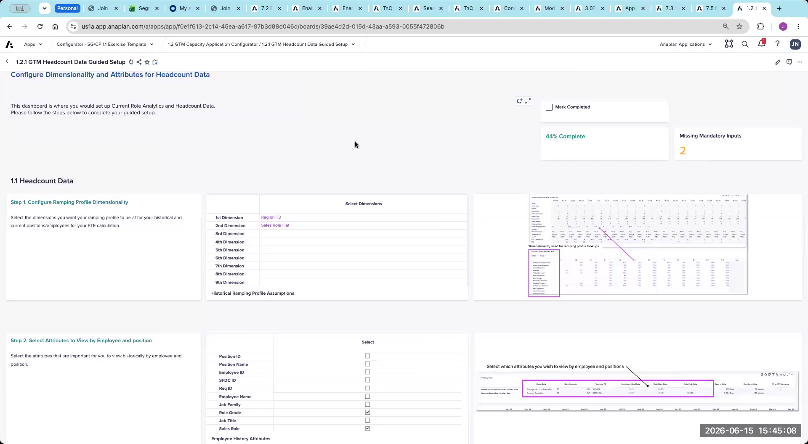
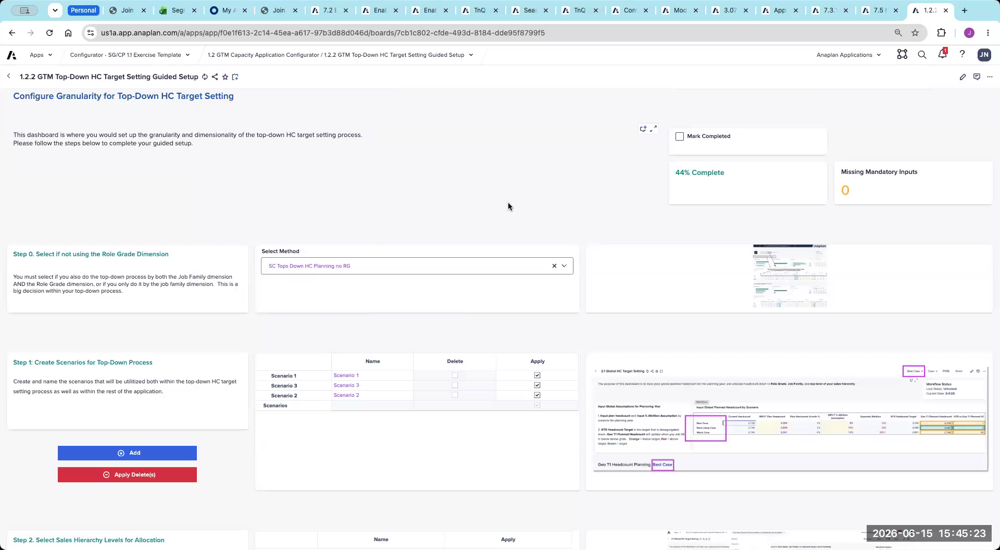
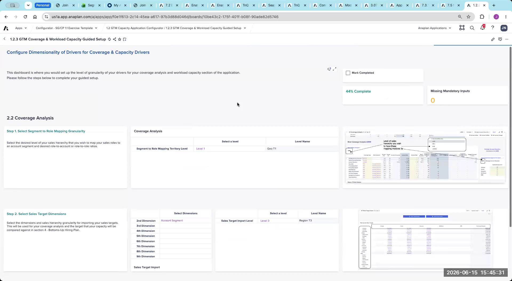
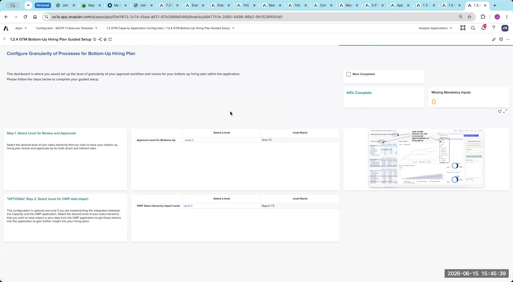

Lab: Capacity Configurator
CloudWorks case study — Capacity configurator exercise
This lab is an exercise — there are no answers on this page. Review the CloudWorks case study handout, navigate through the configurator pages, and fill in inputs based on the case study data. The answer key is available in the Appendix → and will be reviewed during the facilitator-led debrief.
What you'll do
- Navigate to Section 1.2 in the configurator left nav and work pages 1.2.1 → 1.2.4 in order, using the Step XX labels as your guide
- Configure GTM headcount data inputs (1.2.1) and decide whether Role Grade should be enabled for CloudWorks (1.2.2 — Step 0)
- Set tops-down planning structure and coverage ratios (1.2.2, 1.2.3) using the CloudWorks case study handout
- Configure the bottoms-up hiring plan entry level, approval level, and OWP connection (1.2.4)
- Verify each step end-to-end with the inline Check my Work button before the facilitator-led debrief
Exercise Overview
Using the CloudWorks case study handout, complete the Capacity section of the configurator. Navigate to Section 1.2 in the left nav of the configurator app. Work through each page (1.2.1, 1.2.2, 1.2.3, 1.2.4, and any additional pages) in order, making configuration decisions based on the case study data.
For each configurator page: (1) read the page title and Step labels visible to the left of each table in the live configurator — these tell you what each table is for; (2) refer to the CloudWorks case study handout for the customer data relevant to that step; (3) fill in your configuration decisions. After each page, hit Apply / Calculate before moving on. If you already completed the Segmentation exercise, data setup is shared — skip it here.
Part 2: Capacity Configuration — Section 1.2
Navigate to the Capacity section (Section 1.2) in the configurator left nav. Data setup is shared with Segmentation — skip it if you already configured it above.
C1 — Page 1.2.1 — GTM Headcount Data
Review the CloudWorks case study and configure the headcount data inputs for the Capacity model based on the employee data available.
Navigate to Page 1.2.1: GTM Headcount Data
Review each table on this page. Use the Step XX labels on the left side of each table to understand what each table configures. Refer to the CloudWorks case study handout and fill in your inputs based on the case study data.
- What historical headcount data does CloudWorks have available? Is it sufficient to inform ramp and productivity baselining?
- Which employee attributes from the case study data should be mapped at this step?
The Step labels in the live configurator are your primary guide. If a table's purpose is unclear from its Step label, read any inline instructions on the page before making a decision.

Click Apply / Calculate before moving on.
On Page 1.2.1, Step 1 (Configure Ramping Profile Dimensionality), what does the Historical Ramping Profile Assumptions preview chart depend on to be meaningful?
C2 — Page 1.2.2 — GTM Top-Down HC Target Setting
Configure the sales role hierarchy structure and tops-down planning guardrails based on the CloudWorks case study. Make the Role Grade decision carefully — it has significant downstream implications.
Navigate to Page 1.2.2: GTM Top-Down HC Target Setting
Review each table on this page, using the Step XX labels. Refer to the CloudWorks case study handout and configure the role hierarchy and tops-down planning structure.
Before configuring anything else on this page, locate Step 0: the Role Grade enable/disable setting. Review the CloudWorks case study — does CloudWorks require grade-level headcount planning? Decide before proceeding. Enabling Role Grade when it isn't needed significantly increases complexity across the entire app.
- Should Role Grade be enabled for CloudWorks? What in the case study informs this decision?
- How many levels does CloudWorks's sales role hierarchy have? What are the Job Family Groups, Job Families, and Sales Roles?
- At what geography level should tops-down target setting begin for CloudWorks?
- How many planning scenarios should be configured?

Click Apply / Calculate before moving on.
When you've made the Role Grade decision, mapped the CloudWorks role hierarchy, and configured the tops-down target structure, click below to verify.
Page 1.2.2 configured for CloudWorks.
- Step 0 — Role Grade decision made → enabled or disabled based on whether CloudWorks requires grade-level headcount planning, with the case-study evidence noted
- Role hierarchy mapped → Job Family Groups, Job Families, and Sales Roles populated from the CloudWorks case study
- Tops-down geography level set → the level at which Finance / planning leadership provides headcount targets
- Planning scenarios configured → the number of scenarios required for CloudWorks
- Apply / Calculate run → page committed before moving on to 1.2.3
Ready for Page 1.2.3 — coverage and workload.
C3 — Page 1.2.3 — GTM Coverage & Workload
Define how CloudWorks sales roles cover accounts — the fundamental input for calculating how many people are needed.
Navigate to Page 1.2.3: GTM Coverage & Workload Capacity Guided Setup
Review each table, using the Step XX labels. Refer to the CloudWorks case study handout and fill in coverage ratios and segment mapping based on the case study data.
- At what geography level does CloudWorks manage coverage assumptions?
- What are the account-based coverage ratios for each direct seller role?
- Which segments does each role cover?
- Are there overlay or support roles? What are their derived coverage ratios?

Click Apply / Calculate before moving on.
On Page 1.2.3, role-to-segment mapping requires segment definitions. Where do those segments come from?
C4 — Page 1.2.4 — GTM Bottom-Up Hiring Plan
Configure the tactical hiring plan layer — where CloudWorks planners will enter month-by-month hires, constrained by the tops-down NTE.
Navigate to Page 1.2.4: GTM Bottom-Up Hiring Plan Guided Setup
Review each table, using the Step XX labels. Refer to the CloudWorks case study handout and configure the entry level, approval level, and OWP connection.
- At what geography level do CloudWorks planners enter bottoms-up hiring plans?
- At what level do hiring plans get approved?
- Does CloudWorks use Operational Workforce Planning (OWP)? Should the OWP connection be enabled?

Click Apply / Calculate before moving on.
When you've configured the entry level, approval level, and OWP connection decision for CloudWorks, click below to verify.
Page 1.2.4 configured for CloudWorks.
- Bottoms-up entry level set → the geography level at which CloudWorks planners enter month-by-month hires
- Approval level set → the hierarchy tier where bottoms-up hiring plans roll up for approval
- OWP connection decision made → Operational Workforce Planning connector enabled or disabled, based on whether CloudWorks uses OWP
- Apply / Calculate run → page committed before moving on
Section 1.2 is complete. Head to the debrief questions and compare your decisions against the Appendix answer key.
[PENDING: Lab steps for additional 1.2.x pages beyond 1.2.4 to be added once the full page inventory is confirmed via SME review.] For any additional pages you encounter in Section 1.2 of the configurator: use the Step XX labels as your guide, reference the CloudWorks case study handout, make your configuration decisions, Apply / Calculate, and move on.
Debrief Questions — Capacity
- On Page 1.2.2, you made a Role Grade decision for CloudWorks. What did you decide, and what in the case study data informed that choice? What would have happened to the rest of the configuration if you had made the opposite decision?
- You configured coverage ratios at the Americas level on Page 1.2.3. A stakeholder says EMEA needs different ratios (EMEA AEs cover fewer accounts due to relationship-based selling). How does this affect your configuration? What would you change?
- CloudWorks's tops-down planning starts at the Americas level. Finance now says they want to provide targets at the Geo level (i.e., NA and EMEA separately). Is this a configuration change or a post-gen setup? What's the effort if it changes post-generation?
- You configured a bottoms-up entry level and approval level. A territory manager says their plan keeps getting rejected because it exceeds the NTE. What is the NTE, where does it come from in the app, and how would you explain the constraint to the manager?
When the group reconvenes, refer to the Answer Key in the Appendix to compare your decisions.